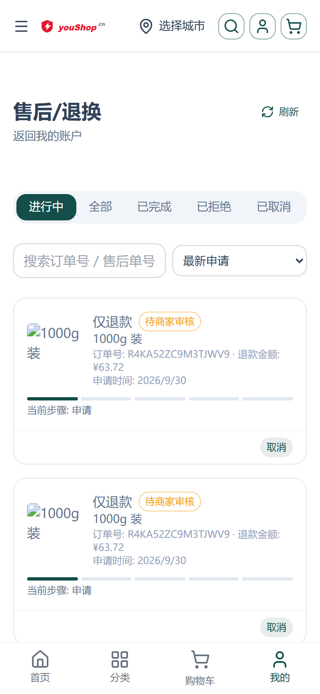
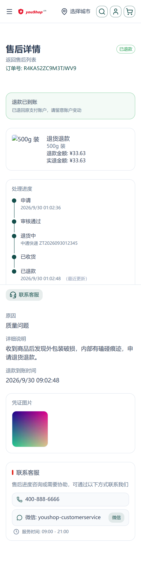
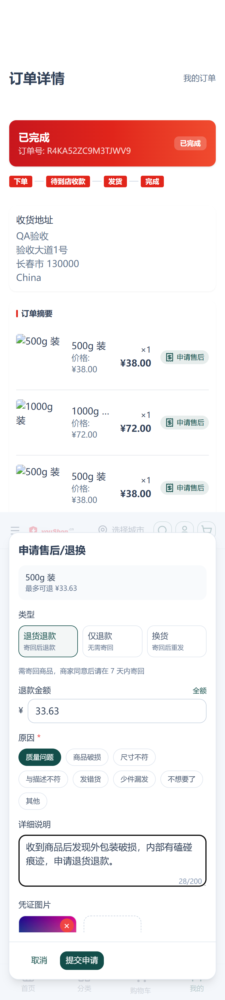
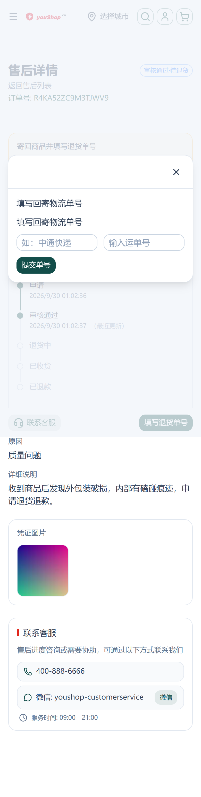
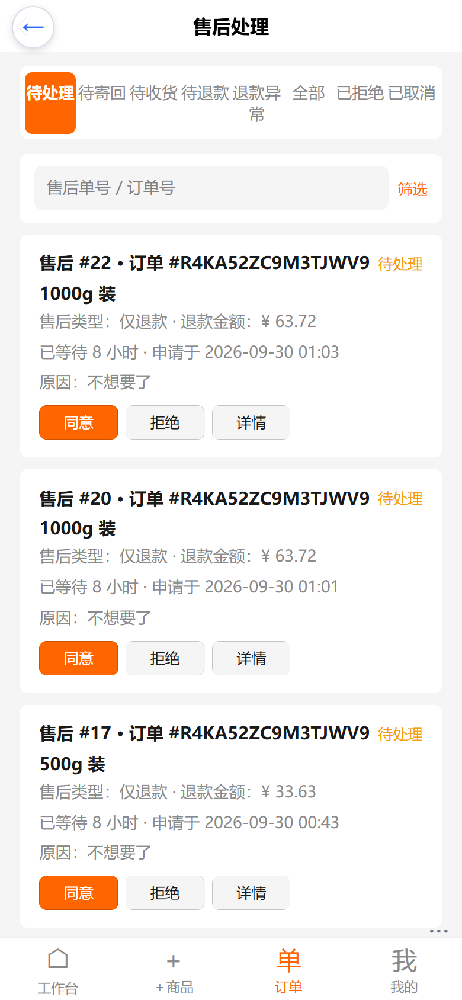
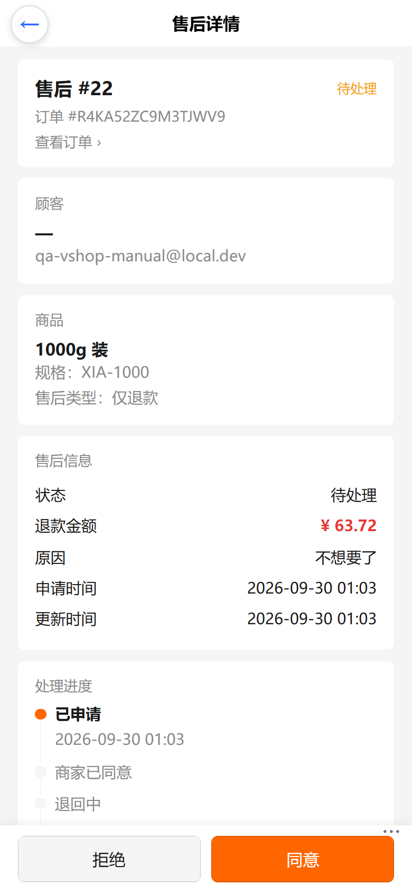
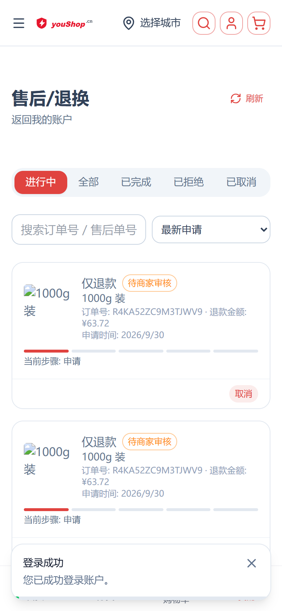
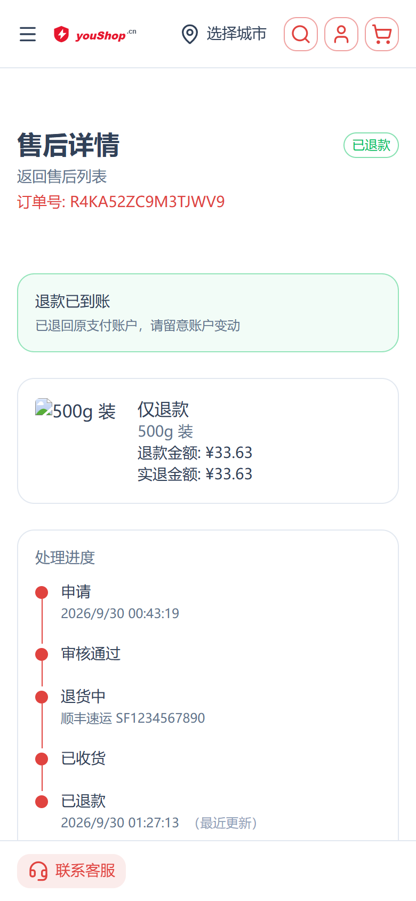
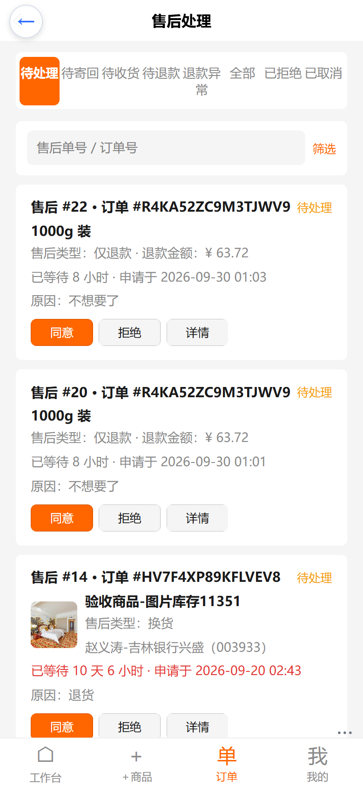
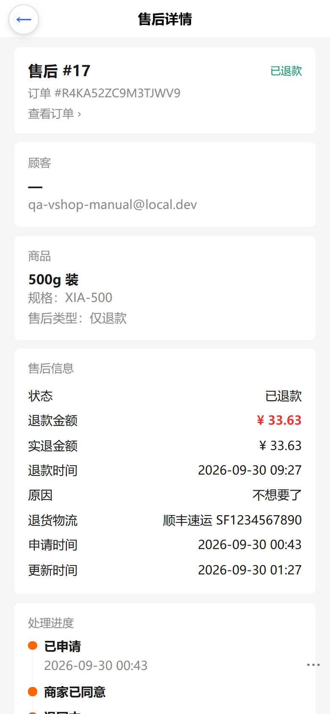

售后页面优化 · 操作手册与测试用例
覆盖 C 端（nshop）与后台（web-admin）售后页面重构；下图为 390×844、dpr=2 手机视口实拍（真实数据、真实流程）。
一、本次改动概览
| 端 | 页面 | 主要变化 |
|---|---|---|
| C 端 | 售后列表 | 页签 5 个（进行中 / 全部 / 已完成 / 已拒绝 / 已取消，「退款异常」并入进行中并按异常色高亮）；卡片补商品图/名称、退款金额、申请时间；搜索（订单号 / 售后单号 / 商品名）+ 排序 |
| C 端 | 售后详情 | 新增「下一步该做什么」引导条 + 纵向处理进度时间线 + 凭证九宫格（可点开灯箱）+ 吸底动作区（联系客服 / 主操作） |
| C 端 | 申请售后弹窗 | 分步表单：类型（退货退款 / 仅退款 / 换货）、可退上限与「全额」快捷、常用原因、详细说明、图片上传（最多 3 张、失败可单张重试） |
| 后台 | 售后列表 | 页签全量化 8 个并默认落「待处理」；卡片补顾客 / 商品 / 等待时长（超 24h 标红）；卡上直接处理（同意 / 拒绝 / 收货 / 退款 / 重试 / 详情）；详细筛选默认折叠 |
| 后台 | 售后详情 | 修正动作可用性（确认收货仅 Returning、执行退款仅 Received）；补顾客 / 商品（SKU）/ 凭证 / 处理进度；吸底操作区 |
二、C 端页面




三、后台页面


四、测试用例
| # | 场景 | 步骤 | 预期 |
|---|---|---|---|
| 1 | C 端·仅退款直连退款 | 对一笔已完成订单申请「仅退款」→ 后台同意 → 后台执行退款 | 详情进度时间线推进到「已退款」；列表页签从〈进行中〉移出，落〈已完成〉 |
| 2 | C 端·退货退款全链路 | 申请「退货退款」→ 后台同意 → C 端吸底点「填写退货单号」→ 后台确认收货 → 后台执行退款 | 中间态停在〈退货中〉；填写单号后后台才可「确认收货」；收货后才可「执行退款」 |
| 3 | 后台动作可用性回归 | 取一笔 Approved 工单，观察后台详情吸底区 | 只出现「拒绝」+「同意」；不出现「确认收货」「执行退款」。Returning 才出「确认收货」，Received 才出「执行退款」 |
| 4 | C 端·凭证上传 | 申请售后时上传 4 张图；再上传一张超大图 | 第 4 张被拦（提示「最多上传 3 张」）；超大图提示「图片过大，请重新选择」；上传失败项可单张「重试」；上传中提交按钮为禁用态 |
| 5 | C 端·重复申请拦截 | 对同一订单行再次发起售后 | 弹窗内提示「该商品已有进行中的售后申请」，不产生新工单，已填内容与已传图片保留 |
| 6 | 后台·等待时长与超时标红 | 列表页取一笔 24h 前申请、仍处 Pending 的工单 | 显示「已等待 1 天 x 小时」且该行标红 |
| 7 | 退款失败可重试 | 构造一笔 RefundFailed（如退款通道异常） | C 端并入〈进行中〉并显示退款异常提示；后台卡上出现「重试」 |
| 8 | 多语言 | 切换任意语言包查看售后列表 / 详情 / 申请弹窗 | 无裸 key（messages.afterSales.* / afterSale.* 不直接出现在页面上） |
五、回归命令
| 层 | 命令 | 工作目录 |
|---|---|---|
| 插件 e2e | pnpm e2e | d:\zhao\vendure\packages\after-sales-plugin |
| C 端单测 | pnpm exec vitest run layers/base/app/utils/__tests__/after-sales-state.spec.ts | d:\zhao\nshop |
| 后台构建 | npm run build:h5 | d:\zhao\vshop\web-admin |
| 本手册截图复现（C 端） | python scripts/_shot_after_sales.py（前置：本地生产构建起在 3000，8080 反代 /shop-api → 线上） | d:\zhao\nshop |
| 本手册截图复现（后台） | python scripts/_shot_after_sales_admin.py（前置：$env:VITE_API_URL="https://e.joho.cn"; npm run dev:h5 → localhost:5280/guanli） | d:\zhao\vshop\web-admin |
| 线上验收截图（第七节） | python scripts/_shot_after_sales_online.py（直连线上，无需本地服务） | d:\zhao\nshop |
| 线上验收链路（API） | python scripts/_verify_online_after_sales.py probe / approve <id> / track <id> / receive <id> | d:\zhao\nshop |
六、本次验证中发现并修复的缺陷
| # | 现象 | 根因与修复 |
|---|---|---|
| 1 | 申请售后时凭证图永远卡在「进行中」，提交按钮恒灰（上传接口其实已 200 返回） | EvidenceUploader 用 ref<Cell[]> 存队列，push 裸对象后被写入 toRaw，之后改 cell.status 不触发依赖更新。改为 reactive<Cell>({...}) 包装后再 push。 |
| 2 | 订单详情页底部常驻渲染「放弃本次填写？」整块文案 | Nuxt UI v3 的 UModal 默认插槽是「触发器」，内容会常驻页面。把弹窗正文移入 <template #body>（申请弹窗 + 售后详情页的凭证灯箱 / 取消确认，共 3 处）。 |
| 3 | 售后详情页吸底主操作「填写退货单号」被全局底部导航盖住，点不到 | 全局 JdTabBar 为 z-[60]，高于页面吸底区。把 /account/after-sales/ 加入 JDTAB_HIDE_PREFIXES（与商品详情 / 结算 / 订单页一致，自带吸底动作的流程页隐藏全局底栏）。 |
| 4 | 后台售后列表整页报错 Cannot query field "sku" on type "OrderLine"，列表与详情均空白 |
Vendure 的 OrderLine 没有 sku 字段（SKU 挂在 productVariant 上）。查询与类型定义去掉 orderLine.sku，SKU 展示统一取 orderLine.productVariant.sku。 |
七、线上验收
线上环境：C 端 www.youshop.cn、后台 e.joho.cn/guanli、后端渠道 cnx87ezvmjx8nn3bth6c。取工单 #17（订单 R4KA52ZC9M3TJWV9 第 208 行「仅退款」¥33.63）走完整链路，四步状态流转均成功：
| # | 操作端 | 操作 | 结果 |
|---|---|---|---|
| 1 | 后台 | 同意 | Pending → Approved |
| 2 | C 端 | 填写退货单号（顺丰速运 SF1234567890） | Approved → Returning |
| 3 | 后台 | 确认收货 | Returning → Received |
| 4 | 后台 | 执行退款 | Received → Refunded；实退金额 3363 分（¥33.63），退款时间 2026-09-30 01:27 |




R4KA52ZC9M3TJWV9、SKU XIA-500、状态「已退款」均正确两端线上截图均无裸 i18n key；后台详情的订单号与 SKU 正确显示，说明 orderLine.productVariant.sku 修复已在线上生效。